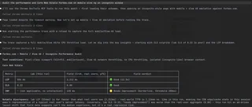
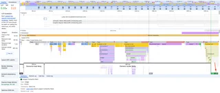
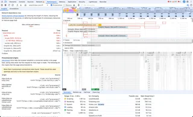

Chrome DevTools MCP: debugging Core Web Vitals and performance
Chrome DevTools MCP Server enables a direct connection between your browser and AI coding assistants, providing real-time context of the active session and making debugging and fixes more accurate.
In this post, I’ll walk through how to set up the Chrome DevTools MCP Server with the Claude Code + Modern Web Guidance, and share my experience using the tool to debug the performance of a real-world site.
Chrome DevTools MCP is an open-source bridge that lets AI coding assistants "see" and interact with a live Chrome browser.
In my previous post, Debugging Page Accessibility Issues with Chrome DevTools MCP Server, you can find more details about what MCP (Model Context Protocol) is and how it works.
This audit uses www.forbes.com as a case study to explore the capabilities of the Chrome DevTools MCP Server for performance debugging. I picked this site just to provide an example of a complex, real-world UI.
The intention is not to evaluate the company or its teams, but to understand how the tool performs in practice.
With that context in place, let's start testing the Chrome DevTools MCP Server's performance debugging capabilities.
Installing Chrome DevTools MCP
To get started, you'll need an AI tool on your terminal. Chrome DevTools MCP works with a large range of clients; in this tutorial I'm using Claude.
This is the command to install Chrome DevTools MCP server and add it to Claude's list of MCP servers:
claude mcp add chrome-devtools --scope user npx chrome-devtools-mcp@latest
Installing Modern Web Guidance
Skills are packages containing instructions and optional scripts that extend AI agent capabilities with specialized knowledge and workflows. On the accessibility post I mentioned at the beginning of this article, I used Addy Osmani Agent Skills. This time, just to experiment with something different, I'm using Modern Web Guidance, an open-source project by the Google Chrome team and the Microsoft Edge team, in collaboration with the wider web development community, launched in May 2026.
Modern Web Guidance is a set of skills that embed web platform expertise, best practices, and browser compatibility data directly into your coding agents.
In order to install Modern Web Guidance, you can simply run on your terminal:
# 1. Add the marketplace:
/plugin marketplace add GoogleChrome/modern-web-guidance
# 2. Install the plugin
/plugin install modern-web-guidance@googlechrome
# 3. Reload plugins
/reload-plugins
To check modern-web-guidance is properly installed, open Claude and run:
/modern-web-guidance
It should return:
This skill helps me look up modern web development best practices before implementing a feature. I don't see a specific implementation task in your message yet — what are you looking to build or check guidance for?Debugging performance
Now that everything is set up, let's start the performance debugging.
This was my prompt in order to get the performance audit:
Audit the performance and Core Web Vitals forbes.com on mobile slow 4g on incognito window
You do not need to use explicit slash commands to activate Modern Web Guidance. Claude Code skills utilize semantic matching, and the tool automatically triggers whenever you ask Claude to write frontend code or audit web-related features.
Chrome DevTools MCP doesn't have a literal "incognito" toggle, but Claude achieved the same isolation by opening the page in a fresh, isolated browser context (no shared cookies or cached state from prior sessions), then emulating a mobile viewport (412×915, 2.625 DPR), Slow 4G network throttling, and a 4× CPU slowdown before recording the trace.

The audit report and suggested fixes
Claude generated an audit report with key performance issues found on forbes.com:
Click here to see the full audit
Forbes.com — Mobile / Slow 4G / Incognito Performance Audit
Test conditions: Pixel-class viewport (412x915, mobile+touch), Slow 4G network
throttling, 4x CPU throttling, isolated (incognito-like) browser context.
Core Web Vitals
Metric | Lab (this run) | Field (CrUX, real users, p75) | Field verdict
LCP | 554 ms | 2,212 ms | Good (<=2.5s)
CLS | 0.00 | 0.00 | Good
INP | n/a | 220 ms | Needs Improvement (threshold 200ms)
Notable discrepancy: lab LCP (554ms) is far faster than what real users see
(2,212ms) — real-world TTFB is 1,126ms vs. 12ms in this run, meaning the CDN
edge/cache state in this session wasn't representative of a typical real
user's server latency.
Key findings
1 - Third-party weight is heavy, ad-tech dominates main-thread cost
Largest transfer: Integral Ad Science (211 kB), Media.net (38 kB), BlueConic (29 kB), Google/DoubleClick Ads (21 kB)
Largest main-thread time: Google CDN (1,358 ms), forbesimg.com (1,352 ms), DoubleClick Ads (838 ms), GTM (827 ms), ketchjs.com/consent management (692 ms), DoubleVerify (638 ms), ISAS (632 ms), BlueConic (618 ms)
Combined, ad/consent/measurement scripts account for several seconds of main-thread work under 4x CPU throttling.
2 - Network dependency chain is deep — 1,986ms critical path
Longest chain: forbes.com → VWO (A/B testing) loader → VWO CDN scripts → nested VWO scripts (1.86–1.99s deep). Font files (Graphik, Schnyder, Highlander — 4 separate woff2 files) also load late in the chain (up to 1.5s).
Preconnect issue: 5+ preconnect hints declared (over Chrome's recommended max of 4), and several are unused/empty-origin — wasted connection setup.
3 - Forced reflow — 885ms total, dominated by an updateSize function in framework-*.js (745ms) and unattributed layout work (231ms), interleaved with ad-related scripts (DoubleVerify, AdSafeProtected, GPT) querying layout properties.
4 - DOM size: 5,804 elements, depth 25 — not extreme, but style recalculations spike as high as 491ms affecting 856 elements at once, likely triggered by late-arriving ad/consent content.
5 - Image delivery: ~20 kB of wasted bytes; LCP image itself (an imageio.forbes.com JPEG served as WebP) loaded fast (85μs download) and isn't the bottleneck — the issue is that 86.9% of LCP time lab-side is render delay, not resource loading, consistent with heavy main-thread contention from third parties blocking paint.
Lighthouse (non-performance categories, mobile)
Accessibility: 80
Best Practices: 54 ⚠️ (low — usually driven by third-party issues: console errors, deprecated APIs, insecure requests from ad partners)
SEO: 85
Agentic Browsing: 50
Bottom line
Forbes's Core Web Vitals pass in aggregate (LCP/CLS good, INP borderline per CrUX), but the site carries a heavy, ad-tech-driven third-party burden that's the real risk factor: the deep critical-path chain (VWO test loader), the forced-reflow time, and the depressed Best Practices score. On genuinely slow connections/devices (closer to what this throttled run simulates), real users are more exposed to these ad-script costs than the p75 field aggregate suggests.
Screenshot of the loaded homepage is attached above. Raw trace saved to forbes_mobile_slow4g_incognito_trace.json in the repo root.
After getting the audit, I asked for fixes for the issues found. Here's the full list:
Click here to see the full list of fixes
Here are concrete fixes mapped to each issue found, based on Chrome's current performance best practices:
1. Third-party weight dominating main thread (ISAS, DoubleClick, GTM, ketchjs, BlueConic, DoubleVerify — several seconds combined)
This is also the real reason LCP's render-delay phase ate 86.9% of the budget even though the image itself loaded in 85μs — the main thread was busy running ad/consent/measurement JS.
- Defer/async everything non-essential, load it after first paint rather than blocking it.
- Deprioritize with fetchpriority="low" on scripts like analytics/verification tags that don't need to compete with content for bandwidth.
- Consider a facade pattern for below-the-fold ad units — don't initialize the full ad-tech stack (IAS, DoubleVerify, etc.) until those slots approach the viewport.
<script src="/js/verification-tag.js" async fetchpriority="low"></script>
2. Critical path depth (1,986ms) — VWO A/B testing loader chain
forbes.com → VWO loader → 2 nested VWO scripts is the longest chain in the trace, and it's not rendering-critical.
- Move the VWO snippet to load async, not synchronously in <head> — A/B test frameworks blocking the critical path for 2 seconds on Slow 4G is a significant, avoidable cost.
- Trim the preconnect list. You have 5+ preconnects (max recommended is 4) and several point to empty/unused origins — each one costs a real DNS+TLS handshake on a slow connection for no benefit. Keep only i.forbesimg.com (fonts/images) and cdn.ketchjs.com (consent, needed early) as preconnects; downgrade the rest to dns-prefetch or drop them.
3. Forced reflow (885ms total, updateSize in framework-*.js = 745ms)
Layout-property reads (getBoundingClientRect, offsetWidth) are interleaved with DOM writes across ad-related code (DoubleVerify, AdSafeProtected, GPT).
- Batch reads before writes — never alternate element.offsetHeight (read) with element.style.height = ... (write) in a loop.
- Where the app is sizing containers dynamically, prefer ResizeObserver over synchronous geometry polling — it reports size changes without forcing a layout.
4. Font loading chain (4 separate woff2 files, up to 1.5s deep in the chain)
- Preload only the 1-2 fonts used above the fold with fetchpriority and crossorigin; the other weights can load later.
<link rel="preload" href="/assets/fonts/Graphik/Graphik-Regular-Web.woff2" as="font" type="font/woff2" crossorigin>
- Given 4 custom families are in play, add font-size-adjust: from-font on body text containers so the fallback-to-webfont swap doesn't itself cause a layout shift while these load.
Net effect
Most of these findings trace back to one root cause: ad-tech and experimentation scripts are on the critical rendering path instead of being deferred/isolated. Fixing the preconnect list, deferring the VWO loader, and containing ad-slot layout would likely resolve the CLS spike, shrink the 1.9s critical chain, and free up the main thread that's currently delaying LCP's render phase — without touching content code at all.
Since this is an audit of a third-party site (not your own codebase), these are recommendations for Forbes's engineering team rather than changes I can apply directly — useful as the "how to fix it" section of your blog post alongside the trace data.
Let's go through each finding below and see whether the suggested fix actually holds up.
Lab data vs. field data
Before looking at any single metric, I want to clarify the two kinds of data mixed into this report, since they measure different things and can genuinely disagree.
Lab data is what Chrome DevTools MCP recorded directly: one page load, on one emulated device, under one set of throttling conditions. It's fully reproducible and lets you attribute a slow metric to a specific script or resource, but it's still just a sample of one.
Field data comes from CrUX (the Chrome User Experience Report): measurements from real Chrome users who actually visited a website, aggregated over a rolling 28-day window and reported at the 75th percentile (p75, meaning 75% of real visits were at least this good). It reflects the full spread of devices, networks, geographies, and cache states Forbes's actual audience experiences, but it can't tell you why a metric is slow, only that it is.
Neither is "more correct"; they're answering different questions. Lab data helps you debug a specific, reproducible issue, while field data tells you whether that issue actually matters to real users and whether your lab result generalizes at all. This audit's own numbers make a good case for using both.
Overview
The report opens by comparing this run's lab metrics against field data, and right away something stands out: the two disagree, in opposite directions.
Metric | Lab (this run) | Field (CrUX, real users, p75) | Field verdict
LCP | 554 ms | 2,212 ms | Good
CLS | 0.00 | 0.00 | Good
INP | n/a | 220 ms | Needs Improvement
Notable discrepancy: lab LCP (554ms) is far faster than what real users see
(2,212ms) — real-world TTFB is 1,126ms vs. 12ms in this run.
Lab LCP looked great here mostly because this session's CDN edge happened to be warm, so the 12ms TTFB isn't what most real visitors get. Field TTFB (1,126ms) is nearly 100× higher, and it's the real bottleneck for most users, something this single lab run never surfaced. Read side by side, it's a live example of why a single lab trace should never be trusted on its own; field data is what actually tells you whether a result is representative or a fluke.
Third-party scripts and main thread blocking
1 - Third-party weight is heavy, ad-tech dominates main-thread cost
- Largest transfer: Integral Ad Science (211 kB), Media.net (38 kB), BlueConic (29 kB), Google/DoubleClick Ads (21 kB)
- Largest main-thread time: Google CDN (1,358 ms), forbesimg.com (1,352 ms), DoubleClick Ads (838 ms), GTM (827 ms), ketchjs.com/consent management (692 ms), DoubleVerify (638 ms), ISAS (632 ms), BlueConic (618 ms)
- Combined, ad/consent/measurement scripts account for several seconds of main-thread work under 4x CPU throttling.
Over 30 distinct third-party origins show up in the trace, and the transfer-size ranking and the main-thread-time ranking don't line up: Integral Ad Science is the single largest payload (211 kB), but Google CDN, which barely registers on the transfer list, costs more CPU time (1,358ms) than any single third party's download. Bytes-over-the-wire and CPU cost are two separate budgets, and 4× CPU throttling makes the CPU one much more visible. That CPU budget is what's blocking the LCP paint, and it's hurting INP too.
LCP
LCP breaks down into four phases: TTFB (server responds), load delay (browser discovers the resource needs fetching), load duration (the download itself), and render delay (time from "resource is ready" to "pixels are actually painted"). Here, the first three phases are essentially free. The featured article image already follows best practice (fetchpriority="high", high network priority) and finishes downloading in 85 microseconds. By 79ms into the page load, the browser has the fully decoded image sitting in memory, ready to paint.
The browser is single-threaded for this kind of work: painting, JavaScript execution, style recalculation, and layout all compete for the same main thread. An image can't be painted while that thread is busy running something else. In this trace, that "something else" shows up clearly in the other findings below: up to 632ms of Integral Ad Science execution, 618ms of BlueConic, 745ms inside Forbes's own updateSize reflow loop, and a single 491ms style recalculation touching 856 elements, all fighting over the same thread the browser needs to flip from "image decoded" to "image painted." The resource pipeline did its job perfectly, but the rendering pipeline was simply too busy to use the result 😔

This is also why the field render delay (610ms) and lab render delay (481ms) are much closer to each other than TTFB is: main-thread contention from third-party scripts is a fairly consistent tax regardless of network conditions, whereas TTFB is almost entirely a function of server/CDN distance, which is exactly where lab and field diverged most in the overview section.
Fix from Modern Web Guidance
Here's what Modern Web Guidance recommends for third-party management:
<!-- Defer non-essential tags, don't let them compete with content -->
<script src="/js/verification-tag.js" async fetchpriority="low"></script>
For the ad verification/viewability scripts specifically (IAS, DoubleVerify), a facade pattern that only initializes them once their ad unit nears the viewport via IntersectionObserver would avoid paying their main-thread cost during initial load at all.
Example code:
<div class="ad-slot" data-ad-unit="leaderboard-1">
<!-- ad renders here once loaded -->
</div>
const adObserver = new IntersectionObserver((entries, observer) => {
entries.forEach((entry) => {
if (!entry.isIntersecting) return;
const slot = entry.target;
loadAdScript(slot.dataset.adUnit);
// Only need to trigger once per slot
observer.unobserve(slot);
});
}, {
// Start loading before the slot is actually on screen,
// so the ad is ready by the time the user scrolls to it
rootMargin: '200px',
});
document.querySelectorAll('.ad-slot').forEach((slot) => {
adObserver.observe(slot);
});
function loadAdScript(adUnit) {
const script = document.createElement('script');
script.src = `https://ads.example.com/tag.js?unit=${encodeURIComponent(adUnit)}`;
script.async = true;
document.body.appendChild(script);
}
Network dependency tree and preconnects
The single longest dependency chain on the page isn't an ad. It's Forbes's own A/B testing tool. VWO's chain is 4 levels deep, and each level has to wait for the previous one's response before the browser even knows what to fetch next.
2 - Network dependency chain is deep — 1,986ms critical path
Longest chain: forbes.com → VWO (A/B testing) loader → VWO CDN scripts → nested VWO scripts (1.86–1.99s deep). Font files (Graphik, Schnyder, Highlander — 4 separate woff2 files) also load late in the chain (up to 1.5s).
Preconnect issue: 5+ preconnect hints declared (over Chrome's recommended max of 4), and several are unused/empty-origin — wasted connection setup.
The VWO loader kicks off a nested chain of scripts that stacks up to almost 2 seconds before the browser can move on.

That makes it a different kind of problem than the ad scripts. Transfer size is only 11.1 kB, tiny enough that it's not a bandwidth issue, and main-thread time is just 4ms, negligible next to Google CDN's 1,358ms or IAS's 632ms. The real cost here is pure network latency.
So why build it this way? This nested-loader pattern is the classic signature of client-side A/B testing anti-flicker behavior. Tools like VWO traditionally have to load a loader script, fetch which experiment variant the visitor is in, fetch the code or CSS for that variant, and apply it, all before the page is allowed to paint. Otherwise the visitor briefly sees the "control" version flash to the "variant" version. Historically, testing platforms solved this with an opacity: 0 trick plus an arbitrary timeout (often 4 seconds) that hides the whole page until the chain resolves, which is exactly why this script ends up front-loaded and chained instead of deferred.
There was no INP record on lab metrics, but the field data shows 220ms, meaning the main-thread contention from third-party scripts and the A/B testing chain was keeping real users from interacting with the page right away.
Layered on top of that, the page declares more preconnect hints than Chrome recommends, and a few of them point at origins that are never actually requested, wasting early-connection budget for nothing.
Fix from Modern Web Guidance
There's now a purpose-built browser primitive for exactly this: blocking="render" on a <script>/<link> in <head>, combined with async, which blocks paint, not HTML parsing, until the script runs, replacing the old opacity-hack-and-4-second-timeout approach entirely:
<script src="https://cdn.example.com/experiment-sdk.js" async blocking="render"></script>The key architectural change Modern Web Guidance recommends: split the tiny "avoid flicker" logic from the heavy SDK. A small render-blocking stub applies just a data-variant attribute on <html> (keeping a strict performance budget, ~100ms), while the rest of VWO's tracking/logic loads separately with plain async, no blocking. That removes the deep sequential chain because the only thing gating paint becomes small and fast, not the 4-level nested loader currently in place.
One caveat: blocking="render" isn't supported in Firefox, so a lightweight fallback (feature-detected, opacity + timeout) is still needed there, but even that fallback is a big improvement over the current ~2-second chain, since it's a single toggle rather than four sequential round trips.
Modern Web Guidance also recommends preloading only the 1-2 fonts used above the fold with fetchpriority and crossorigin. Since 4 custom families are in play, add font-size-adjust: from-font on body text containers so the fallback-to-webfont swap doesn't itself cause a layout shift while these load.
Forced reflow and layout thrashing
3 - Forced reflow — 885ms total, dominated by an updateSize function in framework-*.js (745ms) and unattributed layout work (231ms), interleaved with ad-related scripts (DoubleVerify, AdSafeProtected, GPT) querying layout properties.
updateSize, in Forbes's own 175-*.js bundle, is by far the largest single contributor, accounting for 745ms of the 885ms total. The name and the pattern (a JS function reading layout geometry after DOM writes) point to a resize or measurement loop mixing reads and writes in the same tick: classic layout thrashing, and part of the same main-thread contention described in the LCP section above. It's also the most actionable finding in this report, since it's first-party code, not a vendor script Forbes doesn't control.
Fix from Modern Web Guidance
Batch reads before writes, and swap offsetWidth/getBoundingClientRect polling for ResizeObserver.
async function updateSize(elements) {
for (const el of elements) {
const width = el.offsetWidth; // read
await scheduler.yield(); // yield between read and write
el.style.setProperty('--w', width + 'px'); // write
}
}
DOM size
4 - DOM size: 5,804 elements, depth 25 — not extreme, but style recalculations spike as high as 491ms affecting 856 elements at once, likely triggered by late-arriving ad/consent content.
This is a classic issue on content portals: with close to 6,000 elements on the page, a single style recalculation touches as many as 856 of them at once (491ms). That's the other half of the main-thread story from the LCP section: a large chunk of the DOM has to be re-evaluated any time something invalidates styles high enough up the tree, and each of these recalculations is more main-thread time the browser can't spend painting.
Fix from Modern Web Guidance
Applying content-visibility: auto on below-the-fold article cards shrinks the scope of these recalculations without touching the component tree.
.article-card {
content-visibility: auto;
contain-intrinsic-size: auto 600px;
}
Image delivery and caching & Lighthouse scores
The report even included information about image delivery and Lighthouse scores.
It shows that image delivery and caching aren't the bottleneck here (the images arrive quickly and are cached effectively), but the render delay is what's blocking paint.
Image delivery: ~20 kB of wasted bytes; LCP image itself (an imageio.forbes.com JPEG served as WebP) loaded fast (85μs download) and isn't the bottleneck — the issue is that 86.9% of LCP time lab-side is render delay, not resource loading, consistent with heavy main-thread contention from third parties blocking paint.
There's also evidence the site has room to improve beyond performance:
Accessibility: 80
Best Practices: 54
SEO: 85
Agentic Browsing: 50
Passed: 46, Failed: 13
Final thoughts
Chrome DevTools MCP Server, Claude, and Modern Web Guidance were useful for spotting real, specific performance issues on the page, and the fixes it pulled were consistent and easy to act on, down to exact file names and line numbers for Forbes's own code, not just vendor scripts.
One thing that stood out to me was how much overloading the main thread can affect performance even if you apply best practices to other parts of the page. An image can follow every LCP best practice, including high fetch priority, fast download, no lazy-loading, and still render half a second late, because painting has to wait in line behind whatever else is occupying the main thread. Nearly every other finding in this report (ad-tech scripts, the VWO loader chain, forced reflow, style recalculation) is really the same root cause showing up in different insights: too much competing for one thread.
Another important reminder is that lab and field data tell two different stories, which is only obvious if you deliberately compare the two rather than trusting either in isolation.
It's a solid tool for auditing and debugging, and a reliable source of actionable suggestions. It can guide your attention, but it still requires a critical eye to interpret and validate its recommendations, especially where the trace itself admits it "couldn't identify a root cause." Even so, I see a lot of potential and I really liked the idea of having a community set of guidelines and best practices layered on top of the MCP's output.
I intend to adopt these tools in my workflow, and I recommend you do the same, as the Chrome DevTools MCP receives frequent updates and AI agents continue to advance.